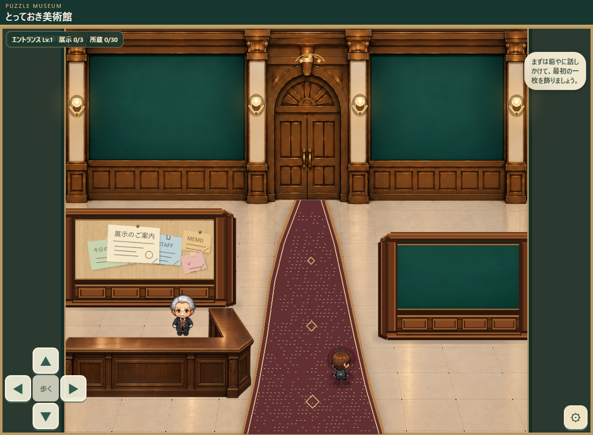

iPhoneでは「拡大する」を押すと、指でスクロールして細かい部分まで確認できます。
Lv.6 最終到達形の試作案静止合成イメージ／未採用

写真の隅まで確認できます。
Lv.1の建築背景・受付・左右の仕切り壁を維持し、赤いカーペット、柱照明、扉上の小装飾を仮に加えています。配置・形状・採用はすべて未確定です。
確認用の静止画像です。 Lv.6のゲームへの実装や当たり判定の完成を意味しません。Lv.1の正式ゲーム・保存データ・正式素材には変更を加えていません。
完成済みのLv.1と、Lv.6の試作イメージを切り替えて比較できます。
iPhoneでは「拡大する」を押すと、指でスクロールして細かい部分まで確認できます。

Lv.1の建築背景・受付・左右の仕切り壁を維持し、赤いカーペット、柱照明、扉上の小装飾を仮に加えています。配置・形状・採用はすべて未確定です。
確認用の静止画像です。 Lv.6のゲームへの実装や当たり判定の完成を意味しません。Lv.1の正式ゲーム・保存データ・正式素材には変更を加えていません。